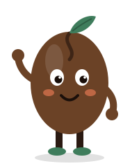

Logo
Our isotype plus the brand name. Used on packaging, the website and official documents.
Specialty Mexican coffee · Since 2014
“Grown high. Brewed right.”
We source coffee grown above 1,200 meters in the mountains of Veracruz, Chiapas and Oaxaca, roast it in small batches and deliver it fresh to your door.

Brand identity
Every element of our brand tells the same story: great coffee starts high in the mountains.
Our isotype plus the brand name. Used on packaging, the website and official documents.
A coffee bean rising like the sun over two mountains: altitude and origin in a single symbol.
Grown high.
Brewed right.
It sums up our promise: the best beans from the highest farms, roasted and brewed with care.
Tito is a friendly coffee bean with a leaf on his head. He represents the farmers' care and our joyful spirit.
About us
Siblings Daniela and Marco Altamirano return to their grandparents' coffee farm in Coatepec, Veracruz, and roast their first batch in a small garage.
They partner with 5 farming families in Chiapas and open their first coffee bar in Xalapa.
Altura launches its online store and starts shipping fresh coffee to all of Mexico.
The brand adds Oaxacan farms, launches its Cold Brew line and reaches 12 partner farms.
Altura exports to the United States and Canada and opens a new roastery with solar energy.
To bring the finest high-altitude Mexican coffee to every cup, paying fair prices to the farmers who grow it and roasting it with care so every customer enjoys a fresh, honest and sustainable coffee experience.
By 2030, to be the most recognized specialty coffee brand from Mexico in North America, known for transparent sourcing and for improving the lives of 500 coffee-farming families.
We pay farmers up to 40% above the market price.
Every bag shows the farm, altitude and roast date.
We only buy coffee that scores 84+ points.
Compostable packaging and a solar-powered roastery.
We invest 5% of profits in rural schools.
We visit each farm, select the best lots and buy directly from the producers, without intermediaries.
We roast in small 15 kg batches, creating a specific roast profile for each origin.
We pack within 24 hours and sell through our online store, our coffee bar and partner cafés.
We run brewing workshops and cuppings so people learn to enjoy specialty coffee at home.
Products
4 product lines (width) and 14 products in total (length), designed for every way of enjoying coffee.
Product in detail
Our best seller and the heart of the Whole Bean line. It is grown by the López family at 1,500 meters in the Sierra Madre of Chiapas, under the shade of native trees. The cherries are hand-picked only when fully ripe, washed and sun-dried for 15 days. We roast it to a medium level to keep its natural sweetness and acidity.
| Origin | Siltepec, Chiapas, Mexico |
|---|---|
| Altitude | 1,500 m above sea level |
| Variety | Bourbon & Typica (100% Arabica) |
| Process | Washed, sun-dried |
| Roast | Medium |
| Tasting notes | Milk chocolate, orange, brown sugar |
| Sizes (depth) | 250 g · 340 g · 1 kg |
| Price | $189 MXN (250 g) · $239 MXN (340 g) · $590 MXN (1 kg) |
| Packaging | Compostable bag with one-way valve and QR code to the farm's story |
Our typical customer
“I work from home and my morning coffee is my ritual. I like knowing where it comes from and that the farmers are paid fairly.”
Men and women, 25–45 years old, living in urban areas, middle to upper-middle income, college-educated.
Value quality, sustainability and authentic experiences. They enjoy cooking, traveling and healthy living.
Drink 2+ cups a day, buy online every 2–4 weeks and are willing to pay more for traceable coffee.
Fresh coffee, convenient delivery, clear information about origin and easy brewing guides.
Value chain
Based on Michael Porter's model: the activities that turn a coffee cherry into the cup you love.
Exclusive video
Follow the journey of our coffee from the farm in Chiapas to your cup in this original video.
FAQ
At higher altitudes the coffee cherries grow more slowly. This gives the beans more sugars and complex flavors, so the cup is sweeter and more aromatic.
We roast every week and ship within 24 hours of roasting. Each bag shows the exact roast date.
Yes. We ship to the United States and Canada. International orders arrive in 5–8 business days.
Whole bean stays fresh longer and gives you the best flavor if you have a grinder. If not, choose ground coffee and tell us your brewing method.
Yes. You can receive coffee every 2, 3 or 4 weeks with a 10% discount, and pause or cancel anytime.
Yes. Our bags are made from plant-based materials and break down in an industrial compost facility in about 6 months.
Contact
Questions, wholesale orders or a visit to our roastery? We'd love to hear from you.